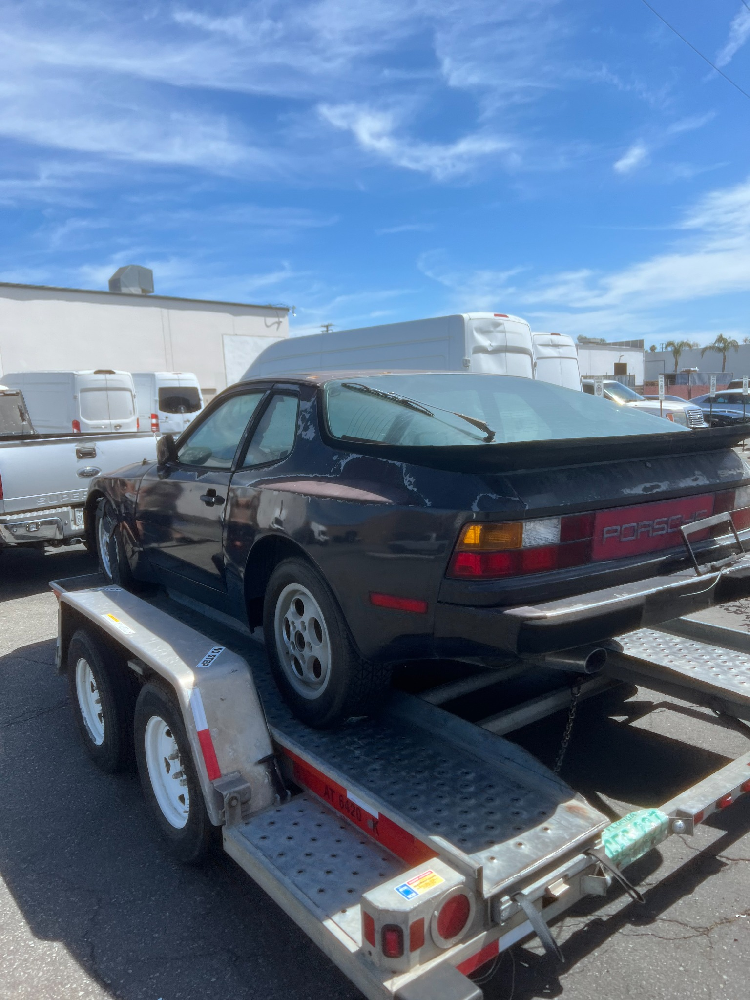
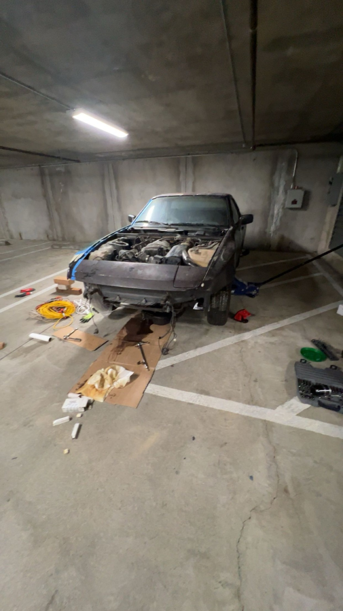
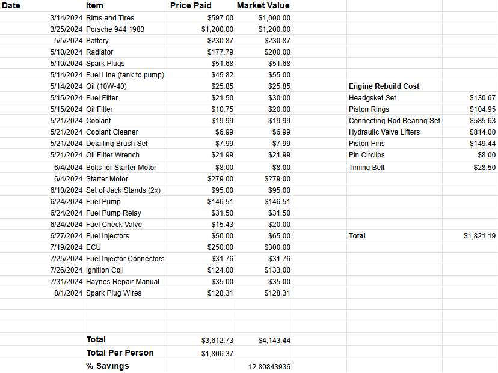

1983 Porsche 944 Restoration.
A hands-on attempt to bring a long-dormant Porsche 944 back to life through inspection, diagnostics, and parts planning. The project ultimately ended for financial reasons.
Goal
Evaluate whether a long-dormant 1983 Porsche 944 could be restored to running condition within a manageable budget.
How I approached it
Inspect and troubleshoot starting/fuel/ignition systems, measure cylinder compression, source components, and maintain a cost/rebuild estimate.
Result / status
Car remained non-running; the restoration ended because the estimated repair costs exceeded the available budget.


Original project photos documenting the condition of the car and the work that followed. Select an image to inspect it at full size.
Explore the full project gallery ↓Make a dormant 944 run again.
I purchased a 1983 Porsche 944 with a friend after it had reportedly not run since the 1990s. The goal was to restore mechanical function and eventually improve the interior while keeping the project affordable through our own diagnosis, labor, and research.
Find the reason for the no-start condition.
The car required investigation of its starter, ignition, fuel delivery, and engine condition. We researched repairs using technical documentation, replaced or serviced supporting components, and carried out compression testing after the engine would crank but still not start.
Troubleshoot and track every dollar.
- 01
Inspected major mechanical systems and worked on fuel-delivery, ignition, and starting components, including the starter motor, ignition coil, fuel pump, and injectors.
- 02
Used a compression test to evaluate engine condition; all four cylinders were below the desired values, with two much lower than the others.
- 03
Maintained a parts spreadsheet comparing actual spending to reference market prices and estimated the next phase of engine-rebuild parts.
- 04
Evaluated the cost and scope of pulling and rebuilding the engine rather than continuing to replace parts without a clear plan.
The numbers changed the project decision.
The budget tracker records $3,612.73 in purchases, including the vehicle, wheels/tires, and repair parts, compared with $4,143.44 in estimated market value. An additional $1,821.19 was estimated for engine-rebuild components. Given those findings, we ended the project for financial reasons before completing the restoration.
A useful outcome, even without a restored car.
The vehicle remained non-running. The project provided hands-on diagnostic experience and a concrete example of using test evidence and cost estimates to make a responsible scope decision rather than overstating progress.
Condition, teardown, and budget tracking.
These images show the state of the car when it was purchased, one of the work sessions during teardown and diagnosis, and the spreadsheet used to monitor project spending and estimated rebuild costs.

